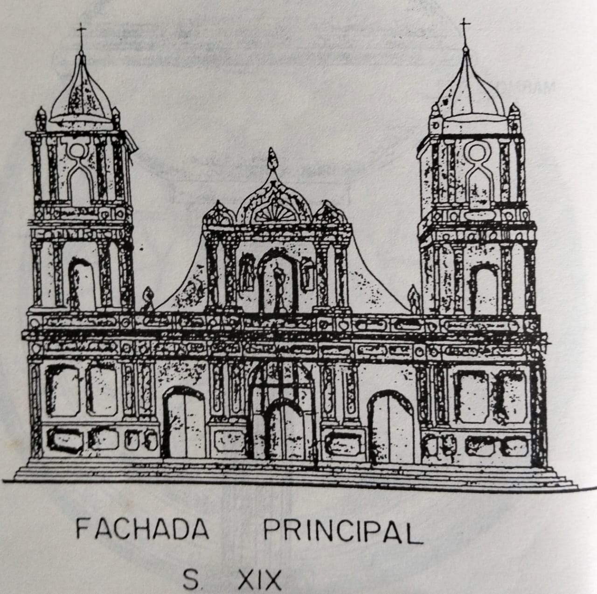
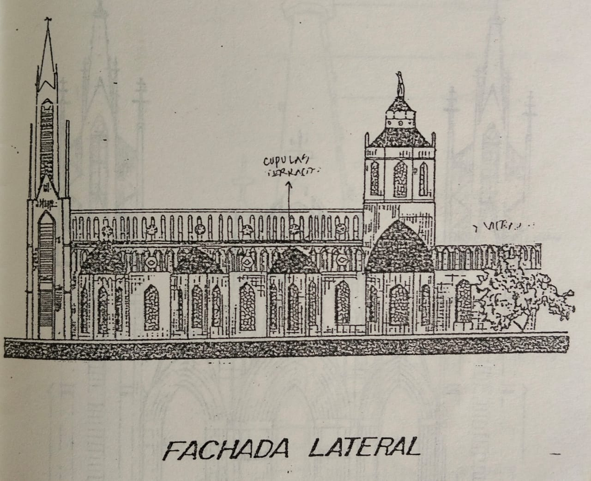
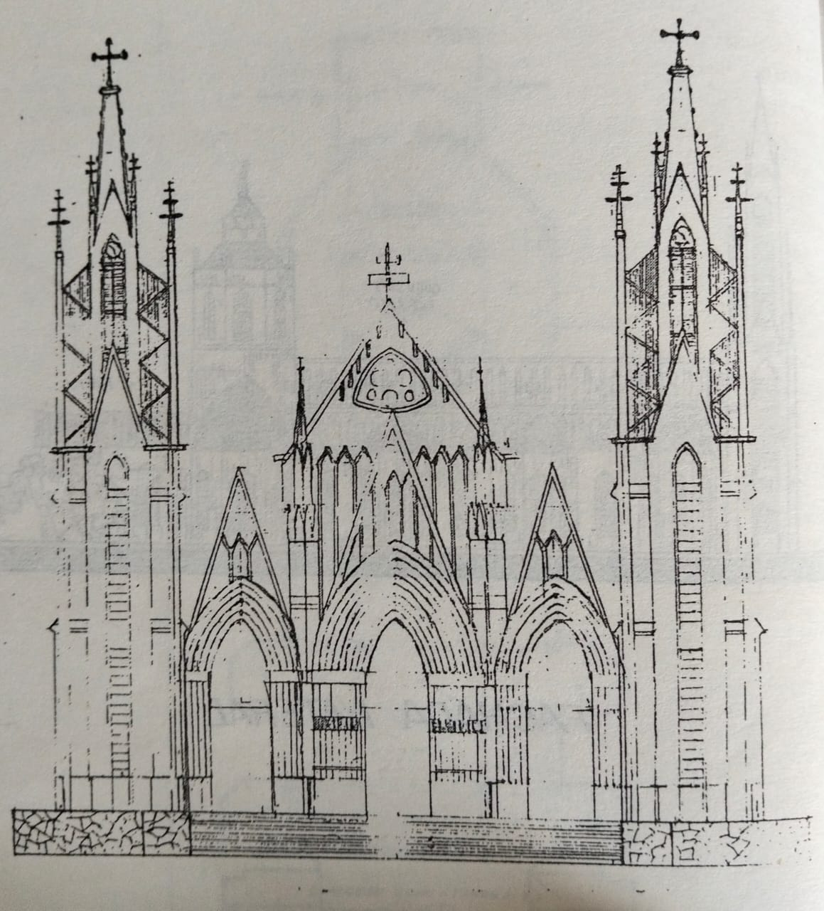
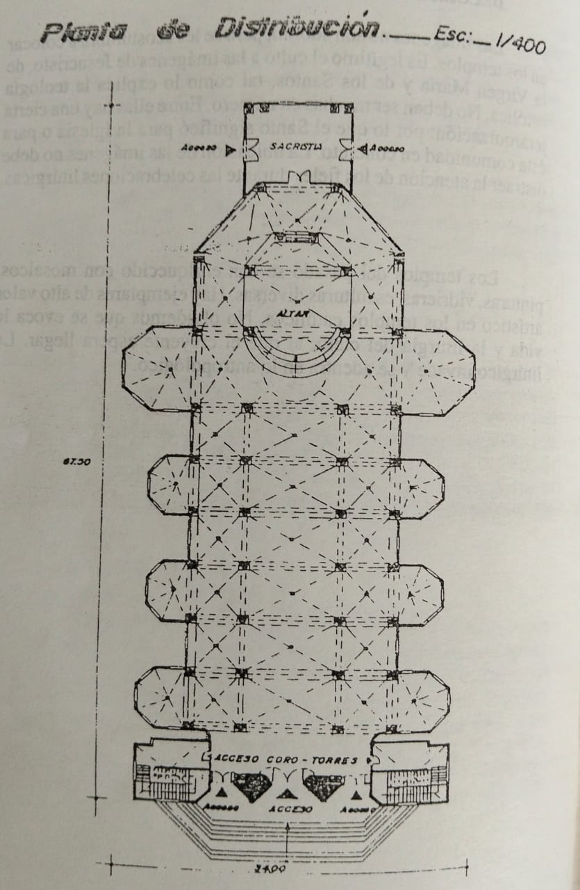
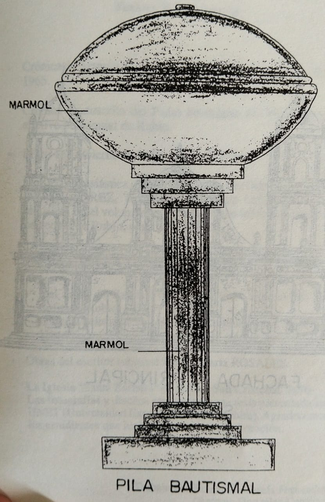

.jpeg)

.jpeg)

La Iglesia Santa Bárbara
Durante su Historia
Rubio ha sido un pueblo marcado por su fé católica. Y uno de estos testimonios es el Templo de Santa Bárbara.
 Iglesia Santa Barbara
Iglesia Santa Barbara
Este Templo
Es único en su estilo y representa una expresión máxima de la solidaridad de la gente, pues fue construido mediante la limosna de la gente.
 Construcción de una de las torres de Aguja
Construcción de una de las torres de Aguja
Los Origenes
Don Gervasio Rubio, considerado fundador del pueblo, construyó la primera capilla rudimentaria de tierra pisada y teja a finales del siglo XVIII. Es importante señalar que ya existía un templo primigenio que funcionaba en la zona de Pueblo Viejo y La Palmita, pero, debido al crecimiento demográfico y las precariedades de los materiales originales surgio la necesidad de uno mayor.

Fachada del Templo que exitía antes de la remodelaciónEvolución Eclesiástica
La vice_parroquia inicial se erigió bajo la advocación de Santa Bárbara en 1810, impulsada por el prebítero Carlos Rubio Maldonado.
Intervención de los Dominicos
En 1926, por iniciativa de Monseñr San Miguel y la orden de los Predicadores (Dominicos Españoles) se proyectó un templo de gran envergadura artística y arquitectónica inspirada en modelos europeos y santuarios de Bogota.

La primera piedra
Se ejecutó solemnemente el 02 de febrero de 1934, bajo la administración técnica del arquitecto Padre Hugoo Orjuela y el Padre Jesús Castañeda..

Los Diseños
Estructura general de corte gótico ecléctico con muros de ladrillo cocido macizo fabricado en alfarerías locales (como la Tejería Venecia). Uso de cúpula central de alta resistencia con columnas cilíndricas perimetrales y refuerzos de mampostería tradicional ("mezcla real" de arena, cal y bosta en etapas iniciales). Incorporación posterior de sistemas de andamiaje y poleas industriales durante las etapas de culminación de torres y cúpula.

Distribución de la PlantaParámetros Técnicos y Arquitectónicos
Longitud total aproximadamente 77 metros en su eje mayor (incluye prebisterio y sacristía). Altura de las torres principales que asciende a unos 50 metros. Cúpula central mnumental que alcanza los 40 metros de altura. Su parte central tiene hasta 18 metros de altura y navres laterales de 15 metros.

Distribución Espacial
Planta de cruz nativa con 3 naves principales, separadas por columnas de orden clásico, acompañadas por 8 capillas laterales de dimensiones asimétricas pero simetría visual equilibrada. Y la cantidad de 42 vitrales en su interior.
Componentes Litúrgicos Internos
Presbiterio elevado con altar central visible, ambón adaptado a la normativa litúrgica, pila bautismal tradicional y una extensa colección de vitrales temáticos donados por familias de la comunidad rubiense.

Pila Bautismal